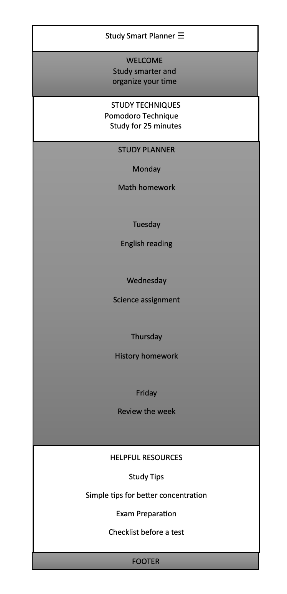
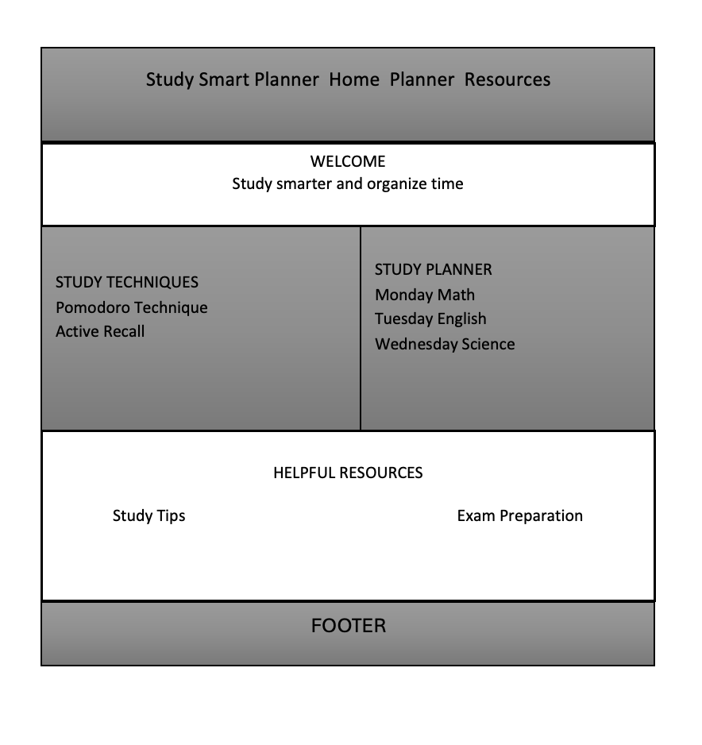

Site Name
Study Smart Planner
This name clearly represents a website designed to help students organize their study time and improve their study habits.
Site Purpose
The purpose of Study Smart Planner is to provide students with practical study techniques, planning tools, and useful resources to help them organize homework, manage their study time, and study more effectively.
Scenarios
- What study techniques can help me prepare better for exams?
- How can I organize my homework and study time more effectively?
Color Scheme
Dark Blue (#1F3A5F): Used for headings, the header, and important visual elements.
Light Blue (#EAF2F8): Used for section backgrounds and supporting areas of the site.
Dark Gray (#1F2933): Used for the main body text.
Typography
Roboto: This font will be used throughout the website. Bold weights will be used for headings and important information, while regular weight will be used for paragraphs and other content.
Wireframes
Mobile View

Desktop View
